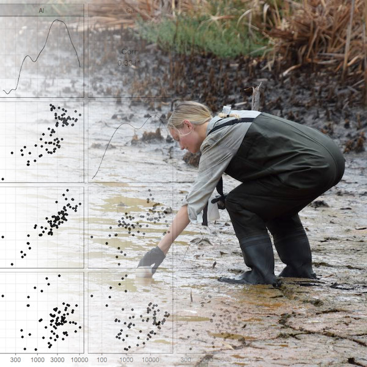

Material to support teaching in Environmental Science
Material to support teaching in Environmental Science
at The University of Western Australia
Units ENVT3361, ENVT4461, and ENVT5503
R for Environmental Science
Data analysis and visualization
Contents
Contents are provided on this page only – to navigate from other pages use the menu at the top.
CC-BY-SA • All content by Ratey-AtUWA. My employer does not necessarily know about or endorse the content of this website.
Created with rmarkdown in RStudio.